User guide
How an analyst works in Nik, from the first sign-in to the report: open an incident, bring in the evidence, read it tab by tab, flag what matters and share the result.
Sign in
On a new installation the first screen asks for an account: the first one created becomes the admin. Every other analyst gets an account from the admin (Settings → Accounts) as an analyst or another admin. Every action is recorded under the analyst's name in the audit log.
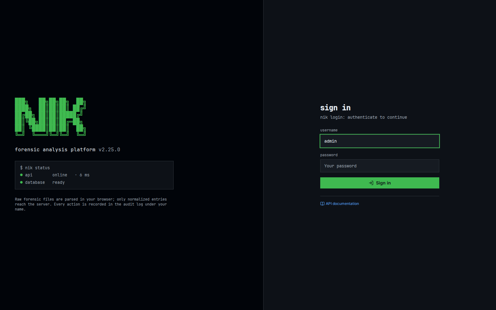
Incidents
An incident is one case: one machine or one user under investigation, and everything found about it. The incidents panel lists them, newest first; click one to open it.
- Click New incident at the top of the incidents panel.
- Fill in what you know: the ticket ID from your tracker, a short title, the host and the user. At least one is needed. Pick the severity (a tag, never part of the name) and the host's operating system, which decides the artifact paths, shells and collection scripts Nik suggests.
- Click Create incident: the incident opens on its Summary tab.
The name is built from the fields: the ticket in square brackets, then the title, or
host - user when there is no title, for example [INC-2041] Invoice phishing, finance.
Everything stays editable from the Summary tab.
Every incident has a status (open, in progress or closed) and can be assigned to an analyst. Set them from the Summary tab, or right-click an incident in the panel: Mark as in progress, Mark as closed, Assign to me. The panel shows the status and the assignee under the name, and filters the list by status or to the incidents that are mine. Both are stated in the report.
Saving, and working on the same incident
There is no Save button: every change is saved as you make it. Several analysts can work on one incident at the same time. When a colleague saved something meanwhile, Nik reads their version and puts your change on top of it, so a note or a flag added by one never erases the other's; their changes appear in your window when you save, and when you come back to it.
- If a change cannot be saved (the server is unreachable), a red bar says Changes not saved yet. Nik keeps trying on its own; Retry now tries at once. Nothing is lost while the window stays open, and closing it with unsaved changes asks first.
- If your session expires while you work, a dialog asks for your password again. The screen stays as it is, and what was not saved yet is saved as soon as you sign in.
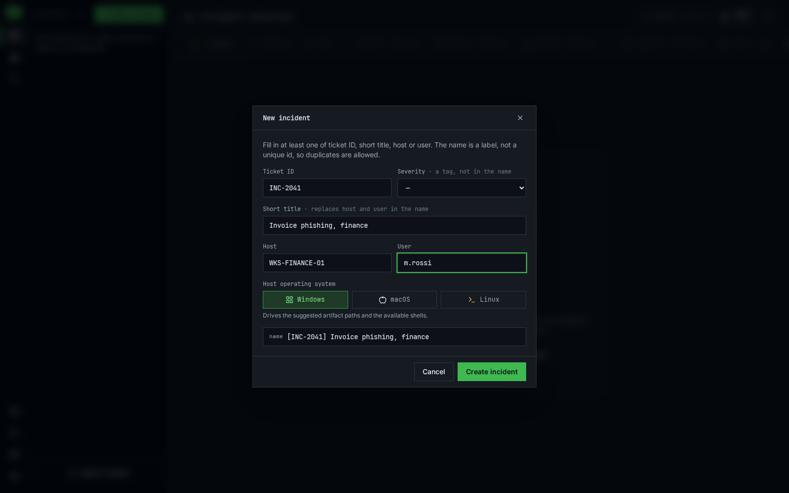
The screen
The narrow column of icons on the left edge is the rail. Its top icons choose what the side panel lists: incidents or artifacts (the files, e-mails and captures analysed so far). Click the active icon again to close the panel and give the whole width to the analysis; drag the panel's edge to resize it. The rail also opens the search, and at the bottom the audit log, the users, the full backup (admins) and the settings.
The lists inside the Mail, Malware, Network and URL tabs close with the button in their corner, and stay closed the next time. When the window is narrow the tab bar shortens its labels, then shows icons only; the open tab always shows its full name, and the others show theirs on hover.
Add evidence
There are two ways to bring a file into Nik:
-
Drop it anywhere on the app. Nik reads the file's name and first bytes and proposes the tab
and the source: a Chrome
Historygoes to Browser Forensics, a.bash_historyto Command History, an.emlto Mail Analysis, an executable to Malware Analysis, a.pcapngto Network Analysis. Check the proposal, change it if needed, then choose where it goes: the open incident, a new incident, or, for e-mails, suspicious files and captures, an analysis on its own with no incident. - Use the Data sources card of a tab, which also tells you where the file lives on the host and, for endpoint artifacts and event logs, gives a native script that collects it.
Browser databases, plists, shell histories and tool exports are parsed in your browser: the raw
file never leaves your machine, only the entries reach the server. Windows .evtx logs, e-mails,
malware samples and packet captures are sent to the Nik server, which analyses them without ever running them.
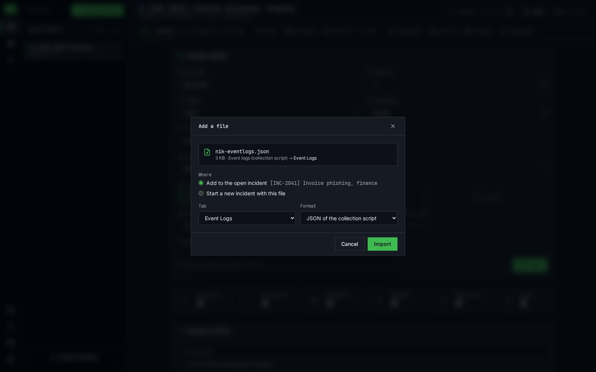
Analyse without an incident
Not everything starts as a case. To check a reported e-mail, a suspicious file, a capture or a link, click New analysis in the artifacts panel (or drop the file anywhere and choose Start analysis). The result is an artifact: it has the same analysis views as in an incident and the whole team sees it in the artifacts panel, with who added it and its verdict. Host evidence (browser and shell history, endpoint artifacts, event logs) always belongs to an incident.
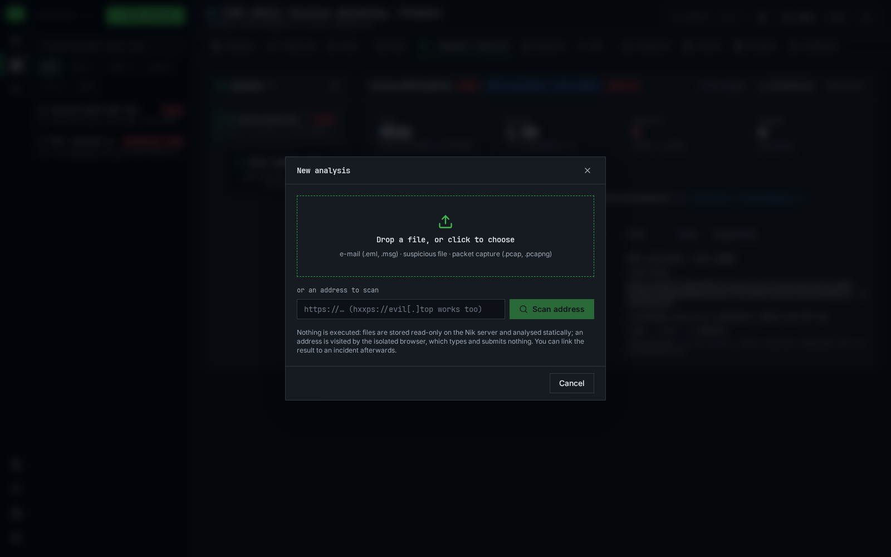
On the artifact's page you can:
- Link to incident: the artifact appears in that incident's tab, indicators, timeline and report. A file or an e-mail can be in several incidents, a capture in one. Removing it from an incident keeps the artifact.
- New incident from this: create the incident and link the artifact in one step.
- Tags: free labels (a campaign, a malware family, a customer) that the panel's filter and the list show.
- Related: where it comes from and what was taken out of it, for example the e-mail an attachment was sent from, or the files extracted from a capture.
- Delete: the file, its analyses and its reference in every incident.
A file that was already analysed is recognised before the upload: Nik shows who added it and in which incidents it is, and opens the existing analysis.
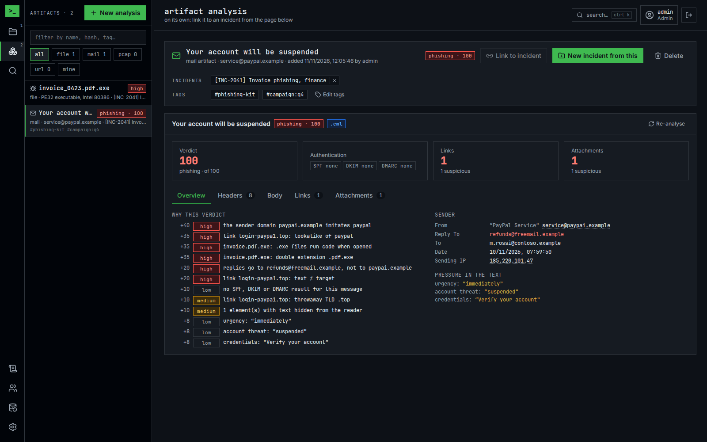
Paste or drag text
Press Ctrl+V anywhere outside a text field, or drag selected text onto the app. When the text is something Nik can act on, a small panel offers what to do; nothing is opened until you choose.
-
An address (with
http://,https://or a path): Analyse URL scans it with the isolated browser. - A hash, an IP address, a domain or an e-mail address: Search in Nik opens the search on it, Where seen lists the incidents that hold it and its reputation. A domain can also be visited (Analyse as URL); a SHA-256 of a file already analysed opens that analysis.
Defanged text is read as it was meant: hxxps://evil[.]top/x, 185.220.101[.]47,
user[at]evil.top. A file copied to the clipboard is handled like a dropped file. Sentences and
longer text are ignored.
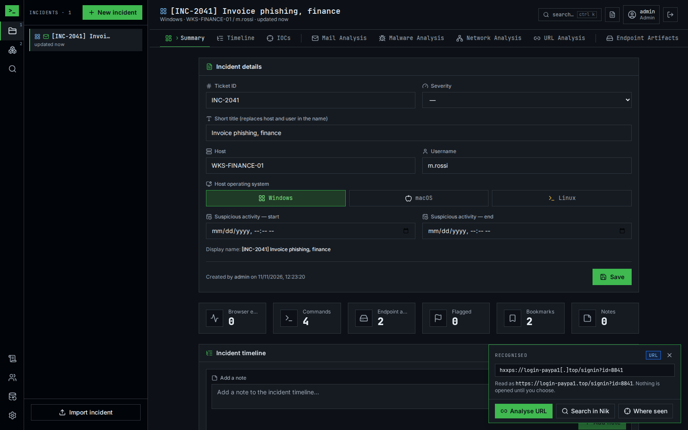
The analysis tabs
The tab bar groups the tabs in the order of an investigation, separated by a thin rule:
| Group | Tabs | What they hold |
|---|---|---|
| Overview | Summary · Timeline · IOCs | What the incident adds up to: details, notes, every event in order, every indicator. |
| Threats | Mail · Malware · Network · URL | The attack itself: the reported e-mail, the samples, the traffic. |
| Host | Endpoint Artifacts · Event Logs · Browser Forensics · Command History | What was collected on the machine. |
Summary, Timeline, IOCs
Summary
The incident's details (ticket, title, severity, status, assignee, host, user, operating system), the suspicious window (start and end of the malicious activity, used to highlight events in every tab), counters per source, the flagged events and the analysts' notes.
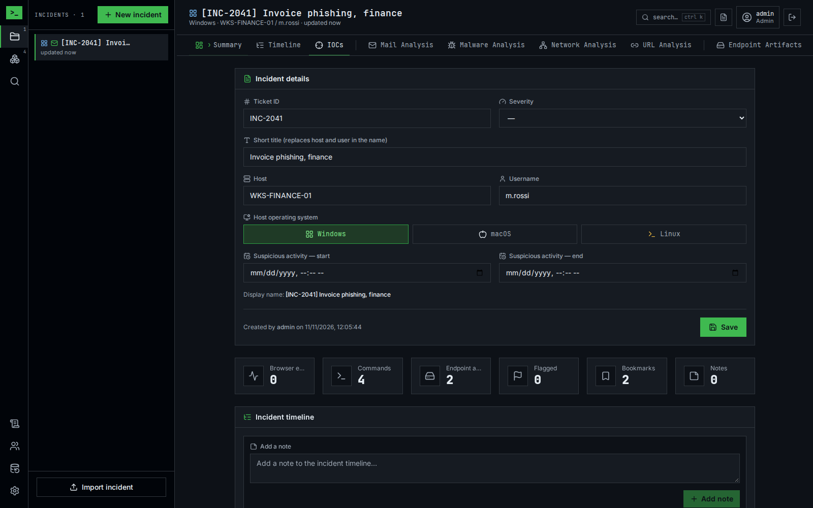
Timeline
Every timestamped event of every tab in one chronological list: browser visits and downloads, commands, endpoint artifacts, Windows events, samples, e-mails and network captures. Filter by source, by text or by severity; the detection engine marks suspicious events, and events inside the suspicious window stand out.

IOCs
The server extracts the indicators (IP addresses, domains, URLs, e-mail addresses, MD5 / SHA-1 / SHA-256 hashes) from everything in the incident. Click an indicator for Where seen: the tabs and the other incidents that hold it. Check now asks the threat-intelligence providers configured in Settings for its reputation. Export the list as CSV, STIX 2.1 or MISP. Indicators that are known good go to the allowlist (right-click → Add to the allowlist).
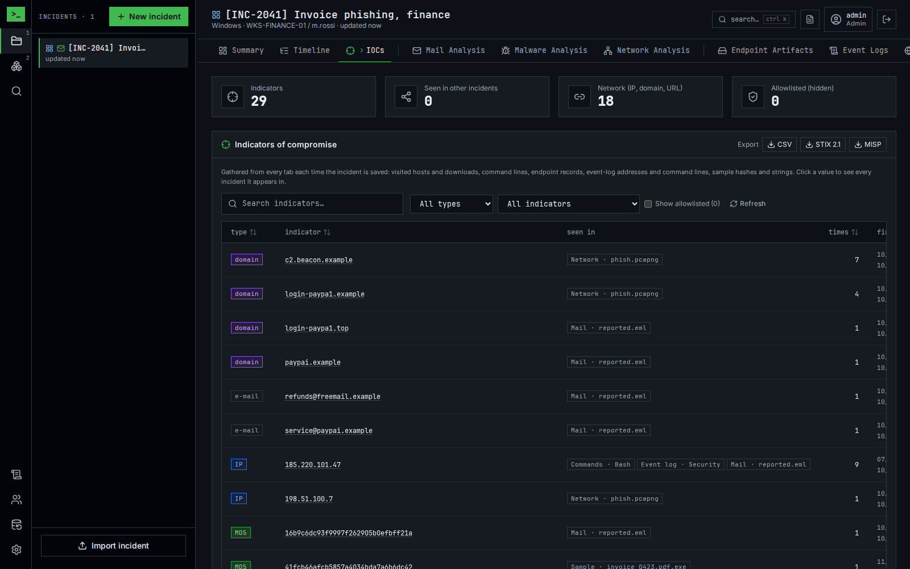
Mail, Malware, Network, URL
Mail Analysis
Drop the reported e-mail (.eml or Outlook .msg). Nik gives a
verdict and a score with the reasons, and shows:
- Headers: the delivery route, the sender, SPF, DKIM and DMARC checked again by Nik.
- Body: drawn in a sandboxed frame that runs no script, follows no link and submits no form. Remote images stay blocked until you choose Load images; tracking pixels and images hidden in the styles are never loaded.
- Links: each link with its real target; a text that differs from the target is flagged.
- Attachments: type, hashes, hex view, a preview of documents, and Send to Malware Analysis. HTML attachments and links open in the isolated browser, whose traffic is kept as a network capture of the incident.
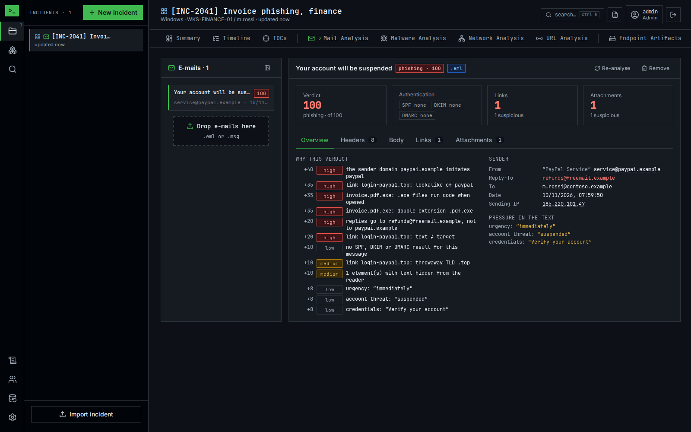
Malware Analysis
Drop a suspicious file. It is stored on the server under its SHA-256, read-only and never executed, and analysed
statically: hashes, type, entropy per block, structure of PE, ELF and Mach-O
files, strings, indicators, YARA matches,
capabilities (capa, with MITRE ATT&CK) and the Code view (functions, call
graph, control-flow graphs and decompiled code). Download zip gives the file in a
password-protected zip (infected by default) so nothing on the way opens it.
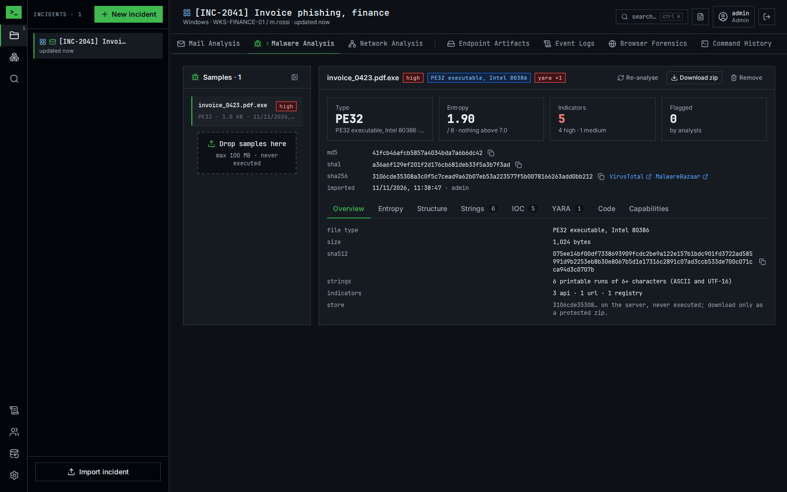
Network Analysis
Drop a .pcap or .pcapng (up to 500 MB). Wireshark's own engine reads it:
- Packets: the packet list with Wireshark's colours, the protocol tree and the bytes. Type a display filter in Wireshark's syntax; right-click a field to filter on it; Follow a TCP, UDP, HTTP or TLS stream; Flag packet adds it to the incident's flagged events.
- Objects: files carried by HTTP, SMB, FTP and others, with their SHA-256, to download in a protected zip or send to Malware Analysis.
- Summary: hosts, DNS queries, HTTP requests, TLS server names, submissions (POST) and beacons (regular connections to the same destination).
Add a TLS key log (SSLKEYLOGFILE) to read HTTPS in clear. Sessions of the isolated browser appear
here too, with a Requests view like the browser's developer tools. The preview of a captured
page is a picture of it: its links, forms and redirects are disarmed.
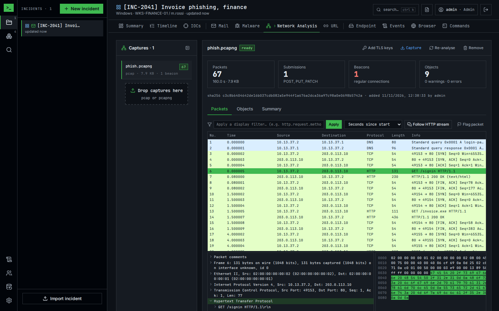
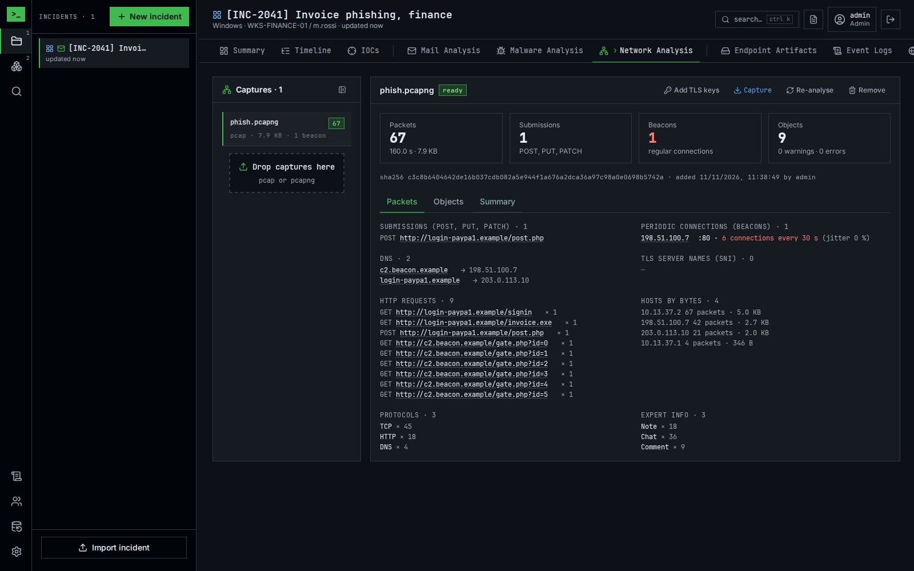
URL Analysis
Give Nik a link from an e-mail or a chat (defanged text such as hxxps://evil[.]top works): the
isolated browser visits it for you, with network access but never your own network, and types,
clicks and submits nothing. You get:
- a screenshot of the page, its final address, title, server and certificate;
- a verdict with its reasons and points: a domain that imitates a brand, a page that asks for a password, a form that sends what is typed elsewhere, a throwaway top-level domain, a certificate issued days ago, a download the page started;
- how the browser got there: every redirect, shorteners included;
- the requests of the visit, and its capture in Network Analysis (Open the capture).
Re-scan visits the address again; Open in the isolated browser lets you look by hand. An address already scanned is recognised and not visited twice.
The isolated browser window
The page runs in a browser on the server; what you see is a picture of it, and your clicks, typing and scrolling are replayed there. Nothing of the page reaches your workstation.
- Size: the window takes most of the screen and the page is drawn at the size of the space it has, so a large monitor shows a large page. The button at the right of the toolbar switches to full screen; Esc leaves it.
- Tabs: when the page opens another window (the pop-up of a sign-in with Google or Microsoft, a link that opens in a new tab) it appears as a tab above the page and is shown at once. The first page stays open: click a tab to go back to it, the cross to close one. When a pop-up closes itself, as a sign-in window does when it is done, you are back on the page that opened it.
- Network: none unless you allow it when opening. With network the page reaches the internet through the server, never an internal address, whatever redirect it follows; what it submits is held until you choose to send it. Network lists every request.
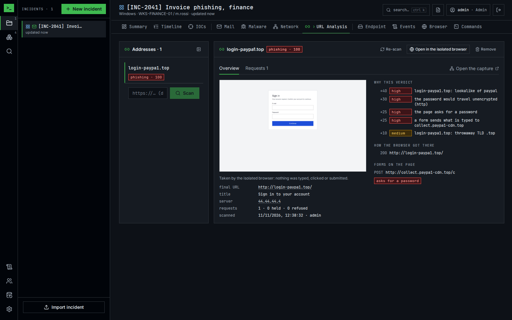
Endpoint, Event Logs, Browser, Commands
Endpoint Artifacts
Four categories: program execution, persistence, file and folder access and removable devices. Each source (BAM, Run keys, scheduled tasks, LaunchAgents, systemd units, USB history…) says where it lives on the host's operating system and offers a native collection script; import the CSV or JSON the script or your DFIR tool produces.
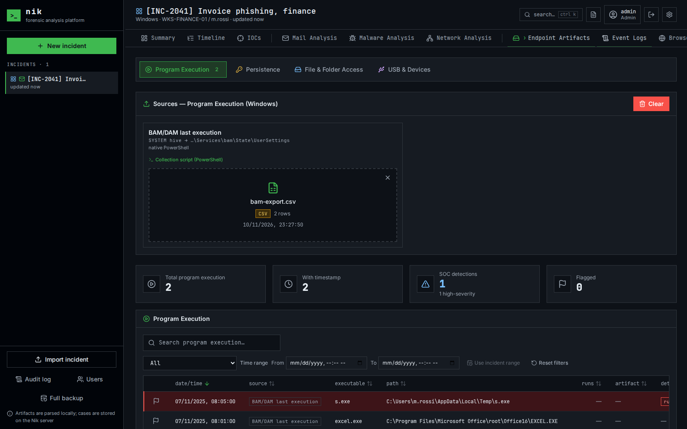
Event Logs
Upload Windows .evtx files (parsed on the server, including records left after a log clear) or the
JSON of the collection script. About fifty event IDs that matter are kept: logons, process creation, services,
scheduled tasks, accounts, PowerShell, RDP, Defender, Sysmon. The coverage chart shows each
log's span, silences and clears against the suspicious window; logons are paired into sessions; a ruleset flags
log clearing, brute force, RDP outside business hours and more.
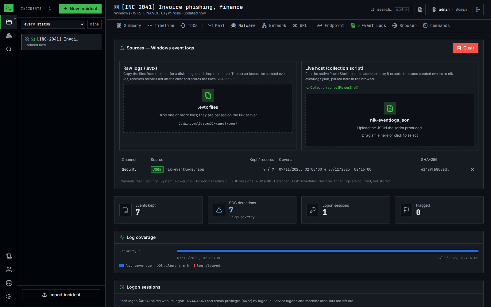
Browser Forensics
One sub-tab per browser (Chrome, Firefox, Edge, Brave, Opera, Safari), each with several profiles. Import the history, downloads, bookmarks and omnibox shortcuts as the browser keeps them (SQLite, JSON, plist) or as a CSV/JSON export. Events are classified as visits, searches and redirects.
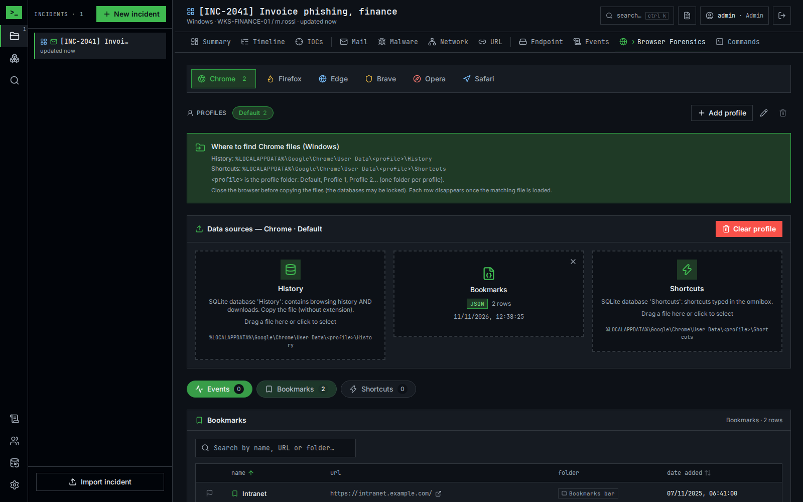
Command History
One sub-tab per shell (Bash, Zsh, Fish, PowerShell). Import the native history file; commands with a timestamp join the timeline, and the detection engine marks download-and-execute, encoded payloads, reverse shells and other tradecraft.
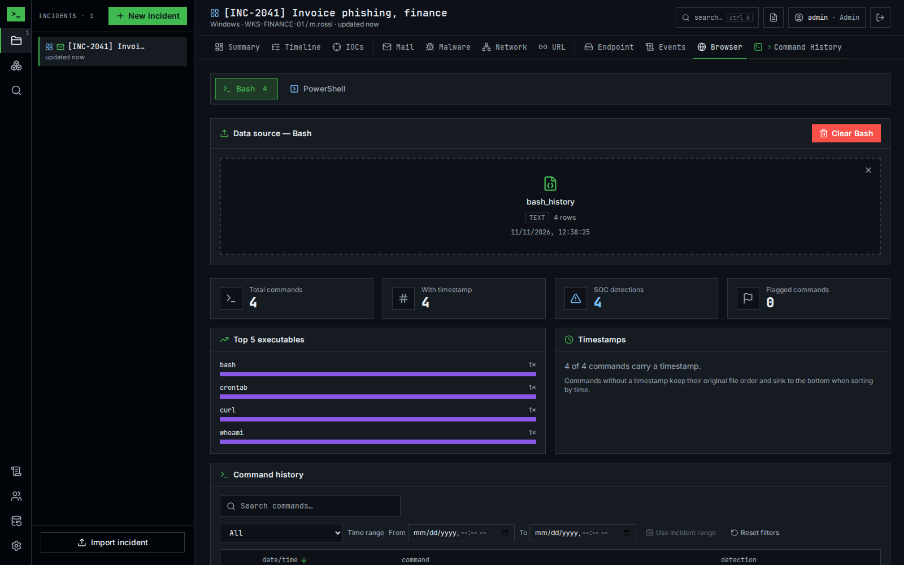
Addresses from the evidence
An address found in the evidence (a visited page, a bookmark, a download source) is never a live link. The arrow
next to it asks first, shows the address defanged, and offers to copy it that way; only
http and https addresses can be opened at all, and doing so contacts the site from
your workstation. To look at a page without that, scan it from URL Analysis, which opens it in
the isolated browser.
Flags, comments and the right-click menu
Right-click works on every row and item of the app, and the menu is always built the same way, with the parts that apply:
| Part | What it offers | Where |
|---|---|---|
| The item's own actions | Open, Open as an artifact, Download zip, Scan again… | Samples, e-mails, captures, addresses, artifacts. |
| Flag and comment | Flag (or remove the flag) and Add a comment, which flags the item too. | Events of every table, samples, e-mails, captures, addresses, functions of a sample, packets, indicators. Only inside an incident. |
| Indicator | Where else was this seen?, Search for it, Copy and Copy defanged, and Add to the allowlist. | Any address, domain, IP, hash or e-mail address: the IOCs tab, a sample's indicators and strings, an e-mail's links, a capture's requests, a scan's redirects. |
| Copy | As text, as JSON (the row's fields), or one field: a hash, a name, an address in memory. | Everywhere. |
| Show in the Timeline | Opens the Timeline filtered on the item. | Flaggable items. |
| Remove or delete | Last, after a rule: remove from the incident, delete a note, remove a tag. | Lists, notes, an artifact's chips. |
A flagged sample, e-mail, capture or address shows a small flag in its list. Everything flagged is listed on the Summary tab, where the same menu removes the flag or adds a comment, and goes into the report. The browser's own menu still opens on text fields, on selected text and with Shift + right-click.
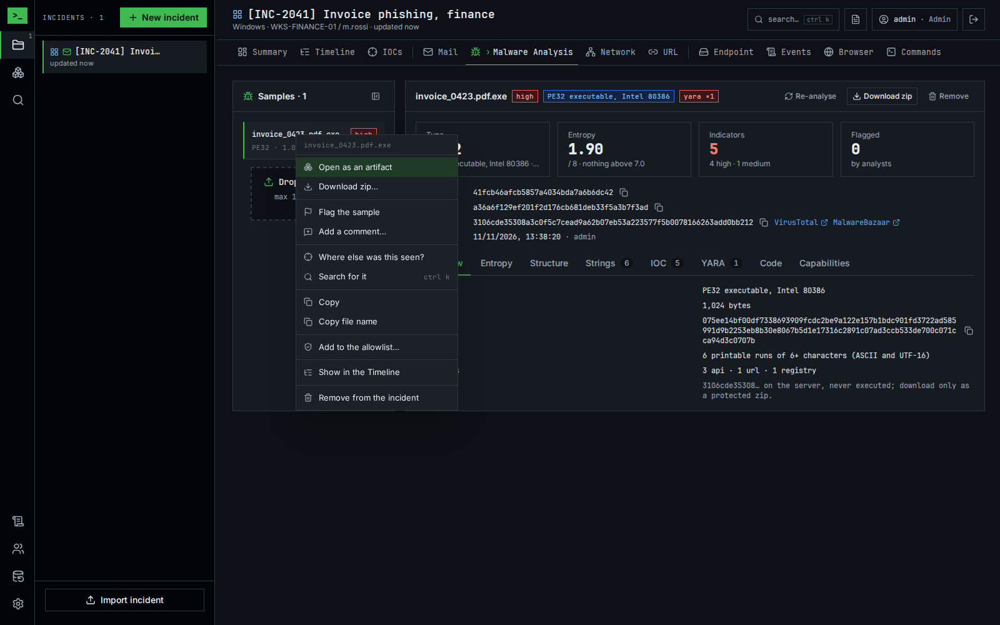
Keyboard shortcuts
Two keys do what the menu does, on the row under the pointer (or on the focused row, after moving with Tab): no click is needed, so a long table is triaged with one hand on the mouse and one on the keyboard. They are off while you type in a field and while a dialog is open.
Everything is reachable without a mouse: Tab stops on every row that has a menu, and Shift + F10 (or the menu key) opens it. A dialog takes the focus when it opens, keeps Tab inside, and gives the focus back when it closes; Esc closes the dialog on top and leaves the one under it open. If single keys get in your way (dictation, the keys of an assistive tool), turn them off at the bottom of the shortcut list: the choice is kept in your browser.
| Key | What it does |
|---|---|
| F | Flags the row, or removes its flag. Removing a flag removes its comments too: the notice that follows has an Undo. |
| C | Asks for a comment on the row, which flags it too. |
| Ctrl + K or / | Opens the search. |
| Ctrl + V | Pastes a file, an address or an indicator to analyse it. |
| ? | Lists the shortcuts (also the keyboard button in the header). |
Search
Press Ctrl+K (⌘+K on a Mac) anywhere. Type to find incidents,
indicators, samples, events and notes; Enter opens the result. Start with > for actions: go to a
tab, new incident, export, settings, sign out.
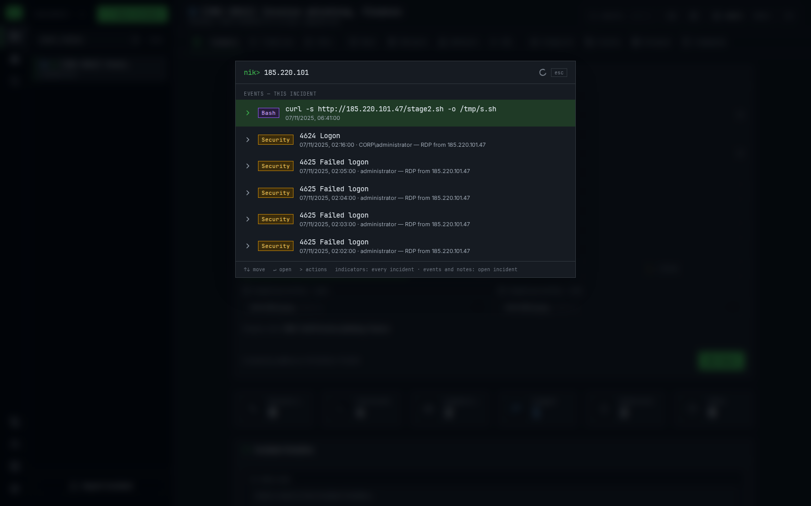
The incident report
The report button in the header opens the report: write the executive summary, choose the sections, the TLP classification and the language (English or Italian), then Preview and download it as PDF or HTML. The organisation's name and logo come from Settings → Report header.
The report holds what you flagged, so it stays about the incident and not about everything that was imported:
- the flagged events, in order, with their comments;
- the indicators flagged by hand;
- the samples, e-mails, captures and scanned addresses that are flagged, or that hold something flagged (an indicator or a function of a sample, a packet of a capture);
- the MITRE ATT&CK techniques of those samples and of the detections on flagged events;
- the event logs that hold a flagged event;
- every note;
- an evidence appendix with the SHA-256 of the imported files that hold something flagged.
Tick Include everything in the dialog for the full inventory instead: every indicator, sample, e-mail, capture and imported file of the incident. The choice is kept per incident.
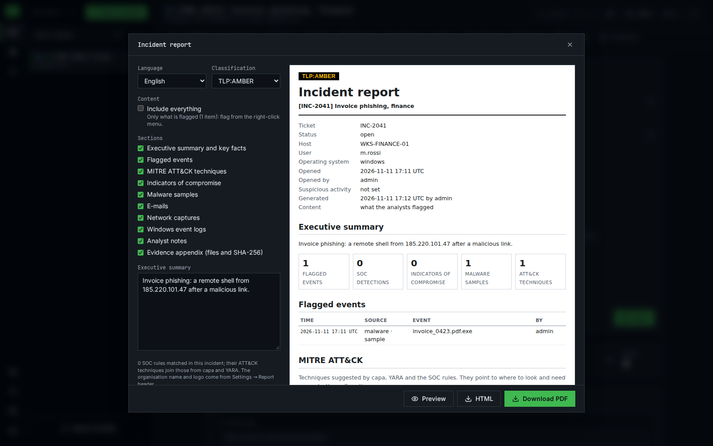
Export, import and backup
- Export an incident from its row in the incidents panel: a JSON file with everything the incident holds, to archive it or hand it to another Nik. Import incident loads one back.
-
Full backup (admins, on the rail): incidents, users, settings and the audit log in one file,
restored from the same dialog. It does not contain the files: samples, e-mails, captures and
their analyses stay on the server, and restoring replaces everything else. The backup of a server is
deploy/backup.sh(see Deployment). - Audit log (on the rail): who did what, when, on which incident. It is written by the server as things happen, so it cannot be edited from the app; an admin can clear it, and the new log starts by saying who did.
Settings
The gear at the bottom of the rail opens the settings. Sections marked admins are shown to admins only.
| Section | What it sets |
|---|---|
| Detection rules | The suspicious keywords and the built-in command, endpoint and event-log rules. |
| Business hours | The working hours; activity outside them is highlighted. |
| IOC allowlist | Known-good indicators (addresses, networks, domains) left out of the IOCs tab. |
| Report header | The organisation's name and logo on the report (admins). |
| Mail analysis | Your organisation's domains (look-alike senders are flagged) and the mail servers whose authentication results are trusted (admins). |
| Threat intelligence | Providers, API keys (never shown again) and which indicator types may be sent out (admins). |
| My account | Who you are signed in as, and a form to change your password. |
| Accounts · API keys | Users and their roles; keys for scripts and integrations (admins). |
| YARA rules · FLIRT signatures · capa rules | Your own rules and signatures for Malware Analysis (admins). |
| Audit log | The platform's audit trail. |
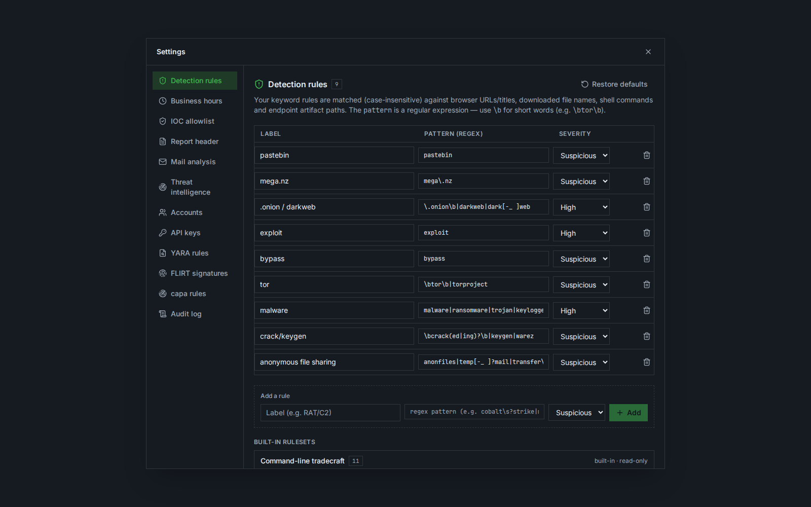
Accounts
An admin adds an account under Accounts and changes it with the pencil on its row:
- Username: the incidents assigned to the account follow the new name. What it already wrote (notes, flags, audit entries) keeps the name it had.
- Role: analyst or admin.
- New password: for someone who forgot theirs. It signs the account out everywhere.
- Disabled: the account cannot sign in and is signed out at once; everything it did stays. Use it instead of deleting when somebody leaves the team.
There is always at least one admin that can sign in: you cannot demote, disable or delete yourself, nor the last admin. Everyone changes their own password under My account, which ends the account's other sessions. After ten wrong passwords in a row an account is locked for five minutes; an admin's password reset unlocks it.